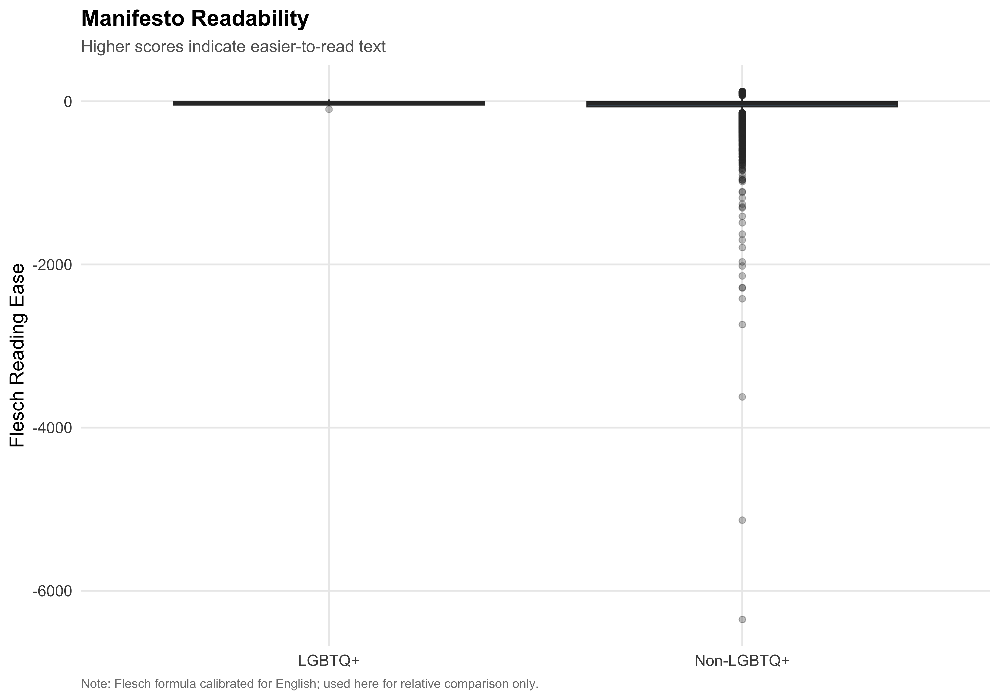
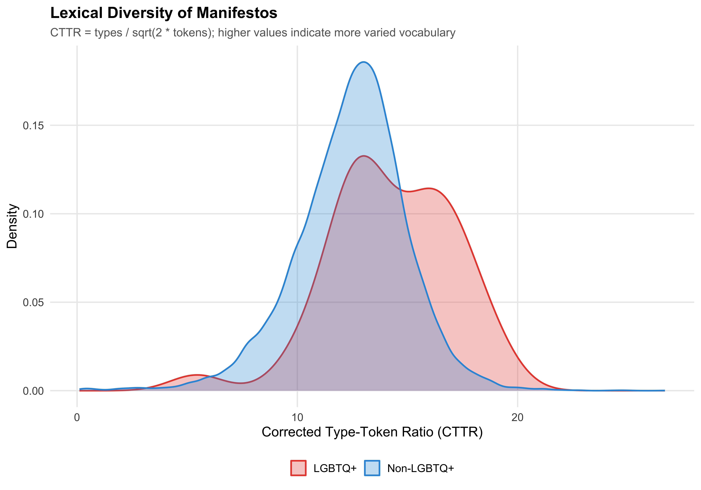
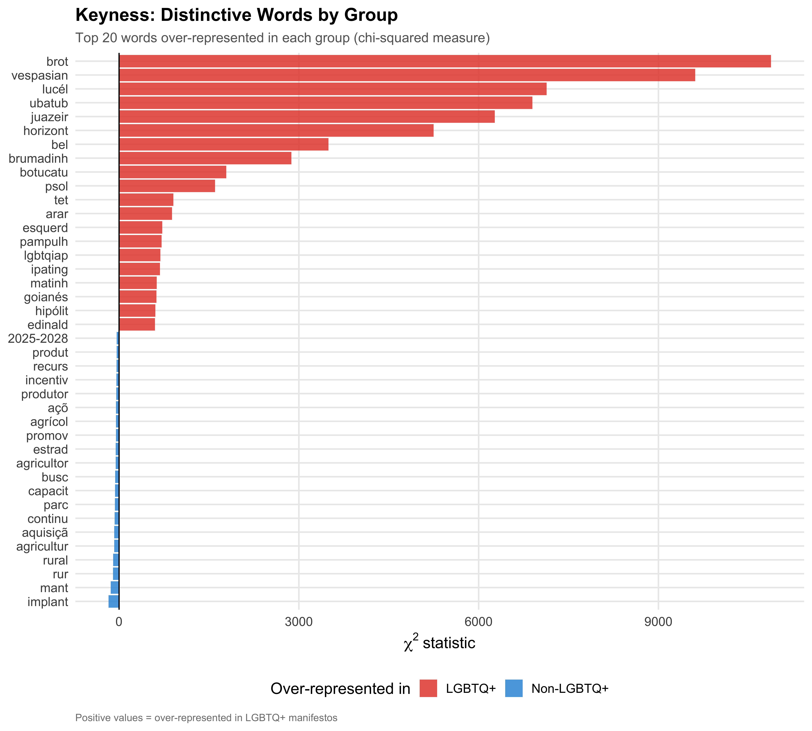
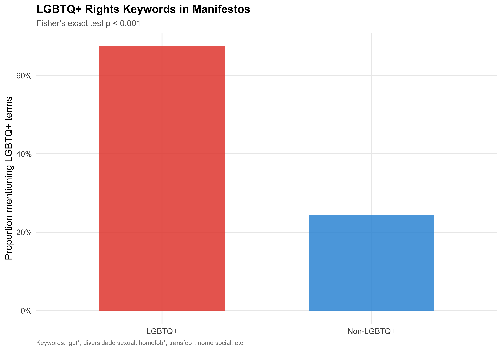

In Brazil, all mayoral candidates must submit a proposta de governo (government proposal/manifesto) to the Tribunal Superior Eleitoral (TSE) as part of their candidacy registration. These mandatory filings offer a unique window into what candidates promise voters — and whether LGBTQ+ candidates differ in what they emphasize.
This chapter analyzes 14,771 mayoral manifestos using quantitative text analysis, of which 37 belong to LGBTQ+ candidates. We proceed in five stages: (1) describing the corpus and its basic properties, (2) comparing text complexity, (3) examining word frequencies and statistical keyness, (4) measuring policy salience using a custom Portuguese-language dictionary, and (5) estimating a Structural Topic Model to identify latent themes associated with LGBTQ+ candidacy.
Small LGBTQ+ Sample (N = 37)
Only 37 LGBTQ+ mayoral candidates have manifestos. All comparative statistics should be interpreted as descriptive patterns, not as statistically powered tests. We present medians and non-parametric tests where feasible.
Table 1: Manifesto Coverage and Length by LGBTQ+ Status
Group
N
Median Words
Mean Words
Median Pages
Mean Pages
LGBTQ+
37
4,517
6,902
19
24.0
Non-LGBTQ+
14734
2,819
3,775
12
15.7
LGBTQ+ candidates write manifestos that are longer than those of non-LGBTQ+ candidates (median 4,517 vs 2,819 words). The median page count is 19 for LGBTQ+ candidates and 12 for non-LGBTQ+ candidates.
Table 2: Manifesto Length by LGBTQ+ Identity Category
Category
N
Median Words
Mean Words
Median Pages
Gay
22
4,396
6,703
16.5
Bisexual+
10
4,612
6,486
21.5
Trans
2
18,100
18,100
60.5
Asexual
2
2,788
2,788
13.5
Lesbian
1
1,260
1,260
5.0
Non-LGBTQ+ (ref.)
14734
2,819
3,775
12.0
3 Text Complexity
We examine two dimensions of text complexity: readability (how easy the text is to read) and lexical diversity (how varied the vocabulary is).
Readability Caveat
The Flesch Reading Ease formula was developed for English. While its syllable-counting mechanics work for Portuguese text, the absolute scores are not directly interpretable as US grade levels. We use these scores only for relative comparisons between groups, not for absolute readability claims.
Show code
# Build quanteda corpuscorp <-corpus(mayors, text_field ="manifesto_text",docid_field ="candidate_id")# Readability (Flesch)readability <-textstat_readability(corp, measure ="Flesch") %>%rename(candidate_id = document, flesch = Flesch) %>%mutate(candidate_id =as.numeric(candidate_id))# Lexical diversity (CTTR — Corrected Type-Token Ratio)# Note: MATTR crashes on quanteda.textstats 0.97.2 (window reset bug).# CTTR = types / sqrt(2 * tokens), which also corrects for document length.toks_lexdiv <-tokens(corp, remove_punct =TRUE, remove_numbers =TRUE)lexdiv <-textstat_lexdiv(toks_lexdiv, measure ="CTTR") %>%rename(candidate_id = document, cttr = CTTR) %>%mutate(candidate_id =as.numeric(candidate_id))# Join back to mayorsmayors <- mayors %>%left_join(readability, by ="candidate_id") %>%left_join(lexdiv, by ="candidate_id")
3.1 Readability Comparison
Show code
ggplot(mayors, aes(x = lgbtq_label, y = flesch, fill = lgbtq_label)) +geom_boxplot(alpha =0.7, outlier.alpha =0.3) +scale_fill_manual(values = pal_lgbtq) +labs(x =NULL,y ="Flesch Reading Ease",fill =NULL,title ="Manifesto Readability",subtitle ="Higher scores indicate easier-to-read text",caption ="Note: Flesch formula calibrated for English; used here for relative comparison only." ) +guides(fill ="none")save_figure(last_plot(), "09_readability_comparison")

Figure 3: Flesch Reading Ease Score by LGBTQ+ Status
3.2 Lexical Diversity
Show code
ggplot(mayors, aes(x = cttr, fill = lgbtq_label, color = lgbtq_label)) +geom_density(alpha =0.3, linewidth =0.8) +scale_fill_manual(values = pal_lgbtq) +scale_color_manual(values = pal_lgbtq) +labs(x ="Corrected Type-Token Ratio (CTTR)",y ="Density",fill =NULL,color =NULL,title ="Lexical Diversity of Manifestos",subtitle ="CTTR = types / sqrt(2 * tokens); higher values indicate more varied vocabulary" )save_figure(last_plot(), "09_lexdiv_comparison")

Figure 4: Lexical Diversity (CTTR) by LGBTQ+ Status
Wilcoxon rank-sum test: Flesch p = 0.025; CTTR p = < 0.001.
4 Word Frequency and Keyness
Show code
# --- Build the NLP pipeline (shared across sections 4-6) ---# Portuguese stopwords: combine two sources for broad coveragept_stopwords <-unique(c(stopwords("pt", source ="snowball"),stopwords("pt", source ="stopwords-iso")))# Domain-specific stopwords common in Brazilian political manifestosmanifesto_stopwords <-c("município", "municipio", "cidade", "prefeito", "prefeita","vice", "candidato", "candidata", "governo", "plano","proposta", "propostas", "gestão", "gestao", "administração","administracao", "público", "publico", "pública", "publica","municipal", "prefeitura", "câmara", "camara", "vereador","secretaria", "artigo", "lei", "parágrafo", "inciso","nº", "art", "cf", "cpf", "cnpj", "ainda", "além", "cada","forma", "bem", "toda", "todo", "todos", "todas", "será","deve", "deverá", "podem", "podem", "sendo", "através","assim", "sobre", "entre", "onde", "acordo", "partir")all_stopwords <-unique(c(pt_stopwords, manifesto_stopwords))# Tokenizetoks <-tokens(corp, remove_punct =TRUE, remove_numbers =TRUE,remove_symbols =TRUE) %>%tokens_tolower() %>%tokens_remove(pattern = all_stopwords) %>%tokens_remove(pattern ="^.{1,2}$", valuetype ="regex")# Stemmed version for frequency and STMtoks_stem <-tokens_wordstem(toks, language ="portuguese")# DFMsdfm_raw <-dfm(toks) # unstemmed (for dictionary lookup)dfm_stem <-dfm(toks_stem) # stemmed# Trimmed version for keyness and STM# Convert count threshold to proportion (compatible with all quanteda versions)dfm_trimmed <- dfm_stem %>%dfm_trim(min_docfreq =10/ndoc(dfm_stem), max_docfreq =0.95,docfreq_type ="prop")
4.1 Top Words by Group
Show code
# Group DFM by LGBTQ+ labeldfm_grouped <-dfm_group(dfm_stem, groups = lgbtq_label)# Get top words per grouptop_words <-textstat_frequency(dfm_stem, n =20, groups = lgbtq_label) %>%mutate(group =factor(group, levels =c("LGBTQ+", "Non-LGBTQ+")))ggplot(top_words, aes(x =reorder_within(feature, frequency, group),y = frequency, fill = group)) +geom_col(alpha =0.85, show.legend =FALSE) +scale_x_reordered() +scale_fill_manual(values = pal_lgbtq) +coord_flip() +facet_wrap(~ group, scales ="free") +labs(x =NULL,y ="Frequency",title ="Most Frequent Words in Manifestos",subtitle ="After stopword removal and Portuguese stemming" )save_figure(last_plot(), "09_top_words_group", height =8)
Figure 5: Top 20 Most Frequent Stemmed Words by LGBTQ+ Status
4.2 Keyness Analysis
Keyness statistics identify words that appear disproportionately in one group relative to the other. We use the chi-squared measure, with LGBTQ+ manifestos as the target group.
Show code
# Group and compute keynessdfm_key <-dfm_group(dfm_trimmed, groups = lgbtq_label)keyness <-textstat_keyness(dfm_key, target ="LGBTQ+", measure ="chi2")# Top 20 in each directiontop_pos <- keyness %>%slice_max(chi2, n =20)top_neg <- keyness %>%slice_min(chi2, n =20)key_plot_data <-bind_rows(top_pos, top_neg) %>%mutate(direction =if_else(chi2 >0, "LGBTQ+", "Non-LGBTQ+"),feature =reorder(feature, chi2) )ggplot(key_plot_data, aes(x = chi2, y = feature, fill = direction)) +geom_col(alpha =0.85) +geom_vline(xintercept =0, linewidth =0.5) +scale_fill_manual(values = pal_lgbtq) +labs(x =expression(chi^2~"statistic"),y =NULL,fill ="Over-represented in",title ="Keyness: Distinctive Words by Group",subtitle ="Top 20 words over-represented in each group (chi-squared measure)",caption ="Positive values = over-represented in LGBTQ+ manifestos" )save_figure(last_plot(), "09_keyness_chi2", height =9)

Figure 6: Statistical Keyness: Words Over-Represented in LGBTQ+ vs Non-LGBTQ+ Manifestos
Interpreting Keyness
A high positive chi-squared value means the word is overrepresented in LGBTQ+ manifestos relative to their size; a high negative value means it is overrepresented in non-LGBTQ+ manifestos. With only 37 LGBTQ+ documents, individual keyness scores should be treated as exploratory indicators rather than definitive findings.
5 Policy Dictionary Analysis
We define a custom Portuguese-language policy dictionary with 10 domains covering the main areas of Brazilian municipal governance. Each manifesto’s salience profile is the proportion of its (classified) words falling in each domain.
Figure 9: Policy Salience by Ideology Among LGBTQ+ Candidates
Dictionary Limitations
Dictionary methods capture only explicit mentions of policy keywords. A candidate may address a topic using indirect language, metaphors, or euphemisms that the dictionary does not capture. Additionally, some words belong to multiple domains (e.g., “comunidade” could be social policy or infrastructure). These results indicate explicit policy emphasis, not comprehensive measures of issue attention.
6 Structural Topic Model
The Structural Topic Model (STM) identifies latent topics in the corpus and estimates whether LGBTQ+ status predicts different topic emphasis, controlling for ideology and region.
Show code
# Prepare DFM for STM: remove empty documents after trimmingdfm_stm <-dfm_subset(dfm_trimmed, ntoken(dfm_trimmed) >0)# Align metadata with DFM documentsstm_meta <- mayors[match(docnames(dfm_stm), as.character(mayors$candidate_id)), ] %>%mutate(lgbtq =as.integer(lgbtq_candidate),ideology_num =case_when( ideology_category =="Left"~-1, ideology_category =="Center"~0, ideology_category =="Right"~1,TRUE~NA_real_ ) )# Drop rows with NA ideology or region (STM cannot handle NAs in prevalence covariates)complete_idx <-!is.na(stm_meta$ideology_num) &!is.na(stm_meta$region)dfm_stm <-dfm_subset(dfm_stm, complete_idx)stm_meta <- stm_meta[complete_idx, ]# Convert to STM formatstm_converted <-convert(dfm_stm, to ="stm")
# Extract searchK results into a data framesk_results <-data.frame(K =unlist(k_search$results$K),exclus =unlist(k_search$results$exclus),semcoh =unlist(k_search$results$semcoh),heldout =unlist(k_search$results$heldout),residual =unlist(k_search$results$residual))p1 <-ggplot(sk_results, aes(x = K, y = semcoh)) +geom_line(linewidth =1) +geom_point(size =3) +labs(x ="K", y ="Semantic Coherence", title ="Semantic Coherence")p2 <-ggplot(sk_results, aes(x = K, y = exclus)) +geom_line(linewidth =1) +geom_point(size =3) +labs(x ="K", y ="Exclusivity", title ="Exclusivity")p3 <-ggplot(sk_results, aes(x = K, y = heldout)) +geom_line(linewidth =1) +geom_point(size =3) +labs(x ="K", y ="Held-Out Likelihood", title ="Held-Out Likelihood")p4 <-ggplot(sk_results, aes(x = K, y = residual)) +geom_line(linewidth =1) +geom_point(size =3) +labs(x ="K", y ="Residuals", title ="Residual Dispersion")(p1 + p2) / (p3 + p4) +plot_annotation(title ="STM Model Selection",subtitle ="Diagnostics across different numbers of topics (K)" )save_figure(last_plot(), "09_stm_searchk", height =8)
Selecting K
We evaluate models with K = 10, 15, 20, and 25 topics using four diagnostics: semantic coherence (do top words co-occur?), exclusivity (are top words unique to topics?), held-out likelihood (predictive fit), and residual dispersion. We select K = 15 as a balance between coherence and exclusivity, favoring interpretability for a descriptive analysis.
The structural topic model identifies latent themes and estimates how LGBTQ+ status correlates with topic emphasis, controlling for ideology and region. However, with only 37 LGBTQ+ documents in a corpus of 14,771, the LGBTQ+ prevalence coefficients have wide uncertainty intervals. These results are best understood as suggestive patterns for future research with larger LGBTQ+ samples, not as definitive evidence of differential policy emphasis. Additionally, no multiple-comparison correction is applied across the 15 topics.
7 LGBTQ+ Rights Keywords
Do LGBTQ+ candidates explicitly mention LGBTQ+ rights issues in their manifestos? We search for a targeted set of keywords.
Show code
# Define LGBTQ+ keywords for targeted searchlgbtq_terms <-c("lgbt*", "lgbtq*", "diversidade sexual", "orientação sexual","orientacao sexual", "identidade de gênero", "identidade de genero","homofob*", "transfob*", "travesti*", "transgêner*", "transgenero*","lésbica*", "lesbica*", "bisexual*", "queer", "nome social","orgulho", "arco-íris", "arco-iris")# Search in unstemmed tokenslgbtq_kwic <-tokens_select(toks, pattern = lgbtq_terms, valuetype ="glob",selection ="keep")# Count per documentlgbtq_counts <-ntoken(lgbtq_kwic) %>%tibble(candidate_id =as.numeric(names(.)), lgbtq_mentions = .) %>%mutate(has_lgbtq_mention = lgbtq_mentions >0)# Join to mayorsmayors <- mayors %>%left_join(lgbtq_counts, by ="candidate_id") %>%mutate(lgbtq_mentions =replace_na(lgbtq_mentions, 0L),has_lgbtq_mention =replace_na(has_lgbtq_mention, FALSE) )
# Fisher's exact testfisher_tbl <-table(mayors$lgbtq_label, mayors$has_lgbtq_mention)fisher_result <-fisher.test(fisher_tbl)fisher_p <-format_p(fisher_result$p.value)keyword_plot <- mayors %>%group_by(lgbtq_label) %>%summarise(pct =mean(has_lgbtq_mention), .groups ="drop")ggplot(keyword_plot, aes(x = lgbtq_label, y = pct, fill = lgbtq_label)) +geom_col(alpha =0.85, width =0.6) +scale_y_continuous(labels =label_percent()) +scale_fill_manual(values = pal_lgbtq) +labs(x =NULL,y ="Proportion mentioning LGBTQ+ terms",fill =NULL,title ="LGBTQ+ Rights Keywords in Manifestos",subtitle =paste0("Fisher's exact test p ", fisher_p),caption ="Keywords: lgbt*, diversidade sexual, homofob*, transfob*, nome social, etc." ) +guides(fill ="none")save_figure(last_plot(), "09_lgbtq_keyword_prevalence")

Figure 10: Proportion of Manifestos Mentioning LGBTQ+ Keywords
8 Summary
This chapter examined 14,771 mayoral candidate manifestos through the lens of quantitative text analysis, comparing the 37 LGBTQ+ candidates against the broader population of 14,734 non-LGBTQ+ candidates.
Corpus characteristics: LGBTQ+ candidate manifestos are longer than their non-LGBTQ+ counterparts (median 4,517 vs 2,819 words).
Text complexity: Readability and lexical diversity comparisons provide insight into whether LGBTQ+ candidates write differently at the stylistic level, though interpretation requires caution given the small sample.
Policy emphasis: The custom Portuguese-language dictionary reveals whether LGBTQ+ candidates place differential emphasis on specific policy domains — education, health, security, economy, social policy, environment, infrastructure, LGBTQ+ rights, culture, and transparency.
Structural topics: The STM identifies latent themes and estimates the marginal effect of LGBTQ+ status on topic prevalence, controlling for ideology and region. With only 37 LGBTQ+ documents, these coefficients carry substantial uncertainty and should be treated as suggestive rather than definitive.
LGBTQ+ rights keywords: The targeted keyword search reveals whether LGBTQ+ candidates are more likely to explicitly reference LGBTQ+ rights issues in their official platform documents.
All findings in this chapter are descriptive. The small LGBTQ+ sample precludes strong inferential claims but reveals patterns that merit investigation as LGBTQ+ political representation grows in future elections.
Source Code
---title: "9. Candidate Manifestos"subtitle: "What Do LGBTQ+ Candidates Promise? A Quantitative Text Analysis"---```{r setup}source(here::here("code", "00_setup.R"))# Text analysis librarieslibrary(quanteda)library(quanteda.textstats)library(quanteda.textplots)library(tidytext)library(stm)library(SnowballC)# Load datadf <- readRDS(paths$analysis_full_rds)# Working subset: mayors with usable manifesto text# Deduplicate by candidate_id (keep first row; manifesto text is the same across dupes)mayors <- df %>% filter(position_simple == "Mayor", has_manifesto, !is.na(manifesto_text), nchar(manifesto_text) > 50) %>% distinct(candidate_id, .keep_all = TRUE) %>% mutate( lgbtq_label = factor( if_else(lgbtq_candidate, "LGBTQ+", "Non-LGBTQ+"), levels = c("LGBTQ+", "Non-LGBTQ+") ), ideology_category = factor(ideology_category, levels = ideology_levels) )n_mayors <- nrow(mayors)n_lgbtq <- sum(mayors$lgbtq_candidate)n_nonlgbtq <- n_mayors - n_lgbtq``````{r inline-computations}# --- Pre-compute values for inline narrative text ---# Word count comparisonslgbtq_words <- mayors$manifesto_n_words[mayors$lgbtq_candidate]nonlgbtq_words <- mayors$manifesto_n_words[!mayors$lgbtq_candidate]median_words_lgbtq <- median(lgbtq_words, na.rm = TRUE)median_words_nonlgbtq <- median(nonlgbtq_words, na.rm = TRUE)mean_words_lgbtq <- mean(lgbtq_words, na.rm = TRUE)mean_words_nonlgbtq <- mean(nonlgbtq_words, na.rm = TRUE)# Page count comparisonsmedian_pages_lgbtq <- median(mayors$manifesto_n_pages[mayors$lgbtq_candidate], na.rm = TRUE)median_pages_nonlgbtq <- median(mayors$manifesto_n_pages[!mayors$lgbtq_candidate], na.rm = TRUE)# Direction labelsword_direction <- if (median_words_lgbtq > median_words_nonlgbtq) "longer" else "shorter"```# OverviewIn Brazil, all mayoral candidates must submit a *proposta de governo* (government proposal/manifesto) to the *Tribunal Superior Eleitoral* (TSE) as part of their candidacy registration. These mandatory filings offer a unique window into what candidates promise voters --- and whether LGBTQ+ candidates differ in what they emphasize.This chapter analyzes `r format_n(n_mayors)` mayoral manifestos using quantitative text analysis, of which `r format_n(n_lgbtq)` belong to LGBTQ+ candidates. We proceed in five stages: (1) describing the corpus and its basic properties, (2) comparing text complexity, (3) examining word frequencies and statistical keyness, (4) measuring policy salience using a custom Portuguese-language dictionary, and (5) estimating a Structural Topic Model to identify latent themes associated with LGBTQ+ candidacy.::: {.callout-warning}## Small LGBTQ+ Sample (N = `r format_n(n_lgbtq)`)Only `r format_n(n_lgbtq)` LGBTQ+ mayoral candidates have manifestos. All comparative statistics should be interpreted as descriptive patterns, not as statistically powered tests. We present medians and non-parametric tests where feasible.:::# Corpus Overview## Manifesto Coverage```{r tbl-manifesto-coverage}#| label: tbl-manifesto-coverage#| tbl-cap: "Manifesto Coverage and Length by LGBTQ+ Status"coverage <- mayors %>% group_by(lgbtq_label) %>% summarise( N = n(), `Median Words` = format_n(median(manifesto_n_words, na.rm = TRUE)), `Mean Words` = format_n(round(mean(manifesto_n_words, na.rm = TRUE))), `Median Pages` = round(median(manifesto_n_pages, na.rm = TRUE), 1), `Mean Pages` = round(mean(manifesto_n_pages, na.rm = TRUE), 1), .groups = "drop" ) %>% rename(Group = lgbtq_label)coverage %>% kable(align = c("l", "r", "r", "r", "r", "r"))save_table(coverage, "09_manifesto_coverage.csv")```LGBTQ+ candidates write manifestos that are `r word_direction` than those of non-LGBTQ+ candidates (median `r format_n(median_words_lgbtq)` vs `r format_n(median_words_nonlgbtq)` words). The median page count is `r median_pages_lgbtq` for LGBTQ+ candidates and `r median_pages_nonlgbtq` for non-LGBTQ+ candidates.## Word Count Distribution```{r fig-word-count-density}#| label: fig-word-count-density#| fig-cap: "Distribution of Manifesto Word Counts by LGBTQ+ Status (Log Scale)"ggplot(mayors, aes(x = manifesto_n_words, fill = lgbtq_label, color = lgbtq_label)) + geom_density(alpha = 0.3, linewidth = 0.8) + geom_vline( data = mayors %>% group_by(lgbtq_label) %>% summarise(med = median(manifesto_n_words, na.rm = TRUE), .groups = "drop"), aes(xintercept = med, color = lgbtq_label), linetype = "dashed", linewidth = 0.7 ) + scale_x_log10(labels = label_comma()) + scale_fill_manual(values = pal_lgbtq) + scale_color_manual(values = pal_lgbtq) + labs( x = "Word Count (log scale)", y = "Density", fill = NULL, color = NULL, title = "Manifesto Length Distribution", subtitle = "Dashed lines indicate group medians" )save_figure(last_plot(), "09_word_count_density")```## Page Count Distribution```{r fig-page-count-bar}#| label: fig-page-count-bar#| fig-cap: "Page Count Distribution by LGBTQ+ Status"mayors %>% mutate(page_bin = cut( manifesto_n_pages, breaks = c(0, 5, 10, 20, 50, Inf), labels = c("1-5", "6-10", "11-20", "21-50", "50+"), right = TRUE )) %>% count(lgbtq_label, page_bin) %>% group_by(lgbtq_label) %>% mutate(pct = n / sum(n)) %>% ungroup() %>% ggplot(aes(x = page_bin, y = pct, fill = lgbtq_label)) + geom_col(position = "dodge", alpha = 0.85) + scale_y_continuous(labels = label_percent()) + scale_fill_manual(values = pal_lgbtq) + labs( x = "Number of Pages", y = "Proportion of Candidates", fill = NULL, title = "Manifesto Page Count Distribution", subtitle = "Grouped by LGBTQ+ status" )save_figure(last_plot(), "09_page_count_dist")```## Word Count by Identity Category```{r tbl-wordcount-identity}#| label: tbl-wordcount-identity#| tbl-cap: "Manifesto Length by LGBTQ+ Identity Category"identity_words <- mayors %>% filter(lgbtq_candidate, lgbt_category != "Other LGBTQ+") %>% group_by(lgbt_category) %>% summarise( N = n(), `Median Words` = format_n(median(manifesto_n_words, na.rm = TRUE)), `Mean Words` = format_n(round(mean(manifesto_n_words, na.rm = TRUE))), `Median Pages` = round(median(manifesto_n_pages, na.rm = TRUE), 1), .groups = "drop" ) %>% rename(Category = lgbt_category) %>% arrange(desc(N))# Add Non-LGBTQ+ reference rownonlgbtq_ref <- tibble( Category = "Non-LGBTQ+ (ref.)", N = n_nonlgbtq, `Median Words` = format_n(median_words_nonlgbtq), `Mean Words` = format_n(round(mean_words_nonlgbtq)), `Median Pages` = round(median_pages_nonlgbtq, 1))bind_rows(identity_words, nonlgbtq_ref) %>% kable(align = c("l", "r", "r", "r", "r"))save_table(bind_rows(identity_words, nonlgbtq_ref), "09_wordcount_identity.csv")```# Text ComplexityWe examine two dimensions of text complexity: **readability** (how easy the text is to read) and **lexical diversity** (how varied the vocabulary is).::: {.callout-note}## Readability CaveatThe Flesch Reading Ease formula was developed for English. While its syllable-counting mechanics work for Portuguese text, the absolute scores are not directly interpretable as US grade levels. We use these scores only for *relative* comparisons between groups, not for absolute readability claims.:::```{r manifesto-text-complexity}# Build quanteda corpuscorp <- corpus(mayors, text_field = "manifesto_text", docid_field = "candidate_id")# Readability (Flesch)readability <- textstat_readability(corp, measure = "Flesch") %>% rename(candidate_id = document, flesch = Flesch) %>% mutate(candidate_id = as.numeric(candidate_id))# Lexical diversity (CTTR — Corrected Type-Token Ratio)# Note: MATTR crashes on quanteda.textstats 0.97.2 (window reset bug).# CTTR = types / sqrt(2 * tokens), which also corrects for document length.toks_lexdiv <- tokens(corp, remove_punct = TRUE, remove_numbers = TRUE)lexdiv <- textstat_lexdiv(toks_lexdiv, measure = "CTTR") %>% rename(candidate_id = document, cttr = CTTR) %>% mutate(candidate_id = as.numeric(candidate_id))# Join back to mayorsmayors <- mayors %>% left_join(readability, by = "candidate_id") %>% left_join(lexdiv, by = "candidate_id")```## Readability Comparison```{r fig-readability-comparison}#| label: fig-readability-comparison#| fig-cap: "Flesch Reading Ease Score by LGBTQ+ Status"ggplot(mayors, aes(x = lgbtq_label, y = flesch, fill = lgbtq_label)) + geom_boxplot(alpha = 0.7, outlier.alpha = 0.3) + scale_fill_manual(values = pal_lgbtq) + labs( x = NULL, y = "Flesch Reading Ease", fill = NULL, title = "Manifesto Readability", subtitle = "Higher scores indicate easier-to-read text", caption = "Note: Flesch formula calibrated for English; used here for relative comparison only." ) + guides(fill = "none")save_figure(last_plot(), "09_readability_comparison")```## Lexical Diversity```{r fig-lexdiv-comparison}#| label: fig-lexdiv-comparison#| fig-cap: "Lexical Diversity (CTTR) by LGBTQ+ Status"ggplot(mayors, aes(x = cttr, fill = lgbtq_label, color = lgbtq_label)) + geom_density(alpha = 0.3, linewidth = 0.8) + scale_fill_manual(values = pal_lgbtq) + scale_color_manual(values = pal_lgbtq) + labs( x = "Corrected Type-Token Ratio (CTTR)", y = "Density", fill = NULL, color = NULL, title = "Lexical Diversity of Manifestos", subtitle = "CTTR = types / sqrt(2 * tokens); higher values indicate more varied vocabulary" )save_figure(last_plot(), "09_lexdiv_comparison")```## Complexity Summary```{r tbl-text-complexity}#| label: tbl-text-complexity#| tbl-cap: "Text Complexity Summary by LGBTQ+ Status"# Wilcoxon testsflesch_test <- wilcox.test(flesch ~ lgbtq_label, data = mayors)cttr_test <- wilcox.test(cttr ~ lgbtq_label, data = mayors)format_p <- function(p) { if (p < 0.001) "< 0.001" else sprintf("%.3f", p)}complexity_summary <- mayors %>% group_by(lgbtq_label) %>% summarise( N = n(), `Median Flesch` = round(median(flesch, na.rm = TRUE), 1), `Mean Flesch` = round(mean(flesch, na.rm = TRUE), 1), `Median CTTR` = round(median(cttr, na.rm = TRUE), 3), `Mean CTTR` = round(mean(cttr, na.rm = TRUE), 3), .groups = "drop" ) %>% rename(Group = lgbtq_label)complexity_summary %>% kable(align = c("l", "r", "r", "r", "r", "r"))save_table(complexity_summary, "09_text_complexity.csv")```Wilcoxon rank-sum test: Flesch p = `r format_p(flesch_test$p.value)`; CTTR p = `r format_p(cttr_test$p.value)`.# Word Frequency and Keyness```{r manifesto-nlp-pipeline}# --- Build the NLP pipeline (shared across sections 4-6) ---# Portuguese stopwords: combine two sources for broad coveragept_stopwords <- unique(c( stopwords("pt", source = "snowball"), stopwords("pt", source = "stopwords-iso")))# Domain-specific stopwords common in Brazilian political manifestosmanifesto_stopwords <- c( "município", "municipio", "cidade", "prefeito", "prefeita", "vice", "candidato", "candidata", "governo", "plano", "proposta", "propostas", "gestão", "gestao", "administração", "administracao", "público", "publico", "pública", "publica", "municipal", "prefeitura", "câmara", "camara", "vereador", "secretaria", "artigo", "lei", "parágrafo", "inciso", "nº", "art", "cf", "cpf", "cnpj", "ainda", "além", "cada", "forma", "bem", "toda", "todo", "todos", "todas", "será", "deve", "deverá", "podem", "podem", "sendo", "através", "assim", "sobre", "entre", "onde", "acordo", "partir")all_stopwords <- unique(c(pt_stopwords, manifesto_stopwords))# Tokenizetoks <- tokens(corp, remove_punct = TRUE, remove_numbers = TRUE, remove_symbols = TRUE) %>% tokens_tolower() %>% tokens_remove(pattern = all_stopwords) %>% tokens_remove(pattern = "^.{1,2}$", valuetype = "regex")# Stemmed version for frequency and STMtoks_stem <- tokens_wordstem(toks, language = "portuguese")# DFMsdfm_raw <- dfm(toks) # unstemmed (for dictionary lookup)dfm_stem <- dfm(toks_stem) # stemmed# Trimmed version for keyness and STM# Convert count threshold to proportion (compatible with all quanteda versions)dfm_trimmed <- dfm_stem %>% dfm_trim(min_docfreq = 10 / ndoc(dfm_stem), max_docfreq = 0.95, docfreq_type = "prop")```## Top Words by Group```{r fig-top-words-group}#| label: fig-top-words-group#| fig-cap: "Top 20 Most Frequent Stemmed Words by LGBTQ+ Status"#| fig-height: 8# Group DFM by LGBTQ+ labeldfm_grouped <- dfm_group(dfm_stem, groups = lgbtq_label)# Get top words per grouptop_words <- textstat_frequency(dfm_stem, n = 20, groups = lgbtq_label) %>% mutate(group = factor(group, levels = c("LGBTQ+", "Non-LGBTQ+")))ggplot(top_words, aes(x = reorder_within(feature, frequency, group), y = frequency, fill = group)) + geom_col(alpha = 0.85, show.legend = FALSE) + scale_x_reordered() + scale_fill_manual(values = pal_lgbtq) + coord_flip() + facet_wrap(~ group, scales = "free") + labs( x = NULL, y = "Frequency", title = "Most Frequent Words in Manifestos", subtitle = "After stopword removal and Portuguese stemming" )save_figure(last_plot(), "09_top_words_group", height = 8)```## Keyness AnalysisKeyness statistics identify words that appear *disproportionately* in one group relative to the other. We use the chi-squared measure, with LGBTQ+ manifestos as the target group.```{r fig-keyness-plot}#| label: fig-keyness-plot#| fig-cap: "Statistical Keyness: Words Over-Represented in LGBTQ+ vs Non-LGBTQ+ Manifestos"#| fig-height: 9# Group and compute keynessdfm_key <- dfm_group(dfm_trimmed, groups = lgbtq_label)keyness <- textstat_keyness(dfm_key, target = "LGBTQ+", measure = "chi2")# Top 20 in each directiontop_pos <- keyness %>% slice_max(chi2, n = 20)top_neg <- keyness %>% slice_min(chi2, n = 20)key_plot_data <- bind_rows(top_pos, top_neg) %>% mutate( direction = if_else(chi2 > 0, "LGBTQ+", "Non-LGBTQ+"), feature = reorder(feature, chi2) )ggplot(key_plot_data, aes(x = chi2, y = feature, fill = direction)) + geom_col(alpha = 0.85) + geom_vline(xintercept = 0, linewidth = 0.5) + scale_fill_manual(values = pal_lgbtq) + labs( x = expression(chi^2 ~ "statistic"), y = NULL, fill = "Over-represented in", title = "Keyness: Distinctive Words by Group", subtitle = "Top 20 words over-represented in each group (chi-squared measure)", caption = "Positive values = over-represented in LGBTQ+ manifestos" )save_figure(last_plot(), "09_keyness_chi2", height = 9)```::: {.callout-note}## Interpreting KeynessA high positive chi-squared value means the word is overrepresented in LGBTQ+ manifestos relative to their size; a high negative value means it is overrepresented in non-LGBTQ+ manifestos. With only `r format_n(n_lgbtq)` LGBTQ+ documents, individual keyness scores should be treated as exploratory indicators rather than definitive findings.:::# Policy Dictionary AnalysisWe define a custom Portuguese-language policy dictionary with 10 domains covering the main areas of Brazilian municipal governance. Each manifesto's salience profile is the proportion of its (classified) words falling in each domain.```{r manifesto-policy-dictionary}policy_dict <- dictionary(list( education = c( "educação", "educacao", "escola*", "escolar*", "ensino", "professor*", "aluno*", "estudant*", "creche*", "infantil", "fundamental", "pedagóg*", "pedagogic*", "aprendizagem", "alfabetização", "alfabetizacao", "universidade", "faculdade", "merenda", "biblioteca*", "letiv*", "curricul*" ), health = c( "saúde", "saude", "hospital*", "ubs", "upa", "médic*", "medic*", "enferm*", "vacina*", "atendimento", "emergência", "emergencia", "ambulância", "ambulancia", "sus", "farmácia", "farmacia", "odontológ*", "odontolog*", "mental", "psicológ*", "psicolog*", "terapêut*", "terapia", "maternidade" ), security = c( "segurança", "seguranca", "polícia*", "policia*", "guarda", "vigilância", "vigilancia", "câmera*", "camera*", "iluminação", "iluminacao", "violência", "violencia", "crime*", "criminal*", "tráfico", "trafico", "droga*", "patrulha*", "ronda*" ), economy = c( "emprego*", "trabalho", "econom*", "renda", "empreend*", "empresa*", "comércio", "comercio", "indústria", "industria", "turismo", "agricultur*", "cooperativ*", "microcrédito", "microcredito", "capacitação", "capacitacao", "desenvolviment*", "investiment*", "fiscal", "orçament*", "orcament*" ), social_policy = c( "assistência social", "assistencia social", "vulnerab*", "pobreza", "benefício", "beneficio", "cras", "creas", "idoso*", "criança*", "crianca*", "adolescente*", "juventude", "igualdade", "inclusão", "inclusao", "acessibilidade", "deficien*", "habitação", "habitacao", "moradia" ), environment = c( "ambiental*", "sustentab*", "ecológ*", "ecolog*", "reciclagem", "resíduo*", "residuo*", "lixo", "saneamento", "esgoto", "desmatamento", "reflorestamento", "poluição", "poluicao", "clima*", "energia solar", "preservação", "preservacao", "parque*" ), infrastructure = c( "infraestrutura", "pavimentação", "pavimentacao", "asfalto", "transporte", "ônibus", "onibus", "mobilidade", "trânsito", "transito", "estrada*", "ponte*", "construção", "construcao", "urbaniz*", "drenagem", "calçada*", "calcada*", "ciclovia*" ), lgbtq_rights = c( "lgbt*", "diversidade sexual", "orientação sexual", "orientacao sexual", "identidade de gênero", "identidade de genero", "homofob*", "transfob*", "travesti*", "transgêner*", "transgenero*", "lésbica*", "lesbica*", "bisexual*", "queer", "nome social" ), culture = c( "cultur*", "arte*", "artístic*", "artistic*", "museu*", "teatro*", "cinema", "festival*", "patrimônio", "patrimonio", "esporte*", "esportiv*", "lazer", "recreação", "recreacao" ), transparency = c( "transparência", "transparencia", "participação popular", "participacao popular", "conselho*", "audiência pública", "audiencia publica", "orçamento participativo", "orcamento participativo", "fiscalização", "fiscalizacao", "prestação de contas", "prestacao de contas", "ouvidoria", "dados abertos" )))``````{r manifesto-dict-apply}# Apply dictionary to unstemmed tokens (dictionary entries use their own glob patterns)dfm_dict <- dfm_lookup(dfm_raw, dictionary = policy_dict)# Convert to proportions (salience = share of classified words per domain)dfm_dict_prop <- dfm_weight(dfm_dict, scheme = "prop")# Convert to tidy data framedict_results <- convert(dfm_dict_prop, to = "data.frame") %>% pivot_longer(-doc_id, names_to = "policy_domain", values_to = "salience") %>% mutate(doc_id = as.numeric(doc_id)) %>% left_join( mayors %>% select(candidate_id, lgbtq_candidate, lgbtq_label, lgbt_category, ideology_category, region, state_abbrev), by = c("doc_id" = "candidate_id") )# Clean domain labels for displaydomain_labels <- c( education = "Education", health = "Health", security = "Security", economy = "Economy", social_policy = "Social Policy", environment = "Environment", infrastructure = "Infrastructure", lgbtq_rights = "LGBTQ+ Rights", culture = "Culture", transparency = "Transparency")dict_results <- dict_results %>% mutate(domain_label = domain_labels[policy_domain])```## Salience Comparison```{r tbl-salience-comparison}#| label: tbl-salience-comparison#| tbl-cap: "Mean Policy Salience by Domain and LGBTQ+ Status"salience_by_group <- dict_results %>% group_by(domain_label, lgbtq_label) %>% summarise(mean_sal = mean(salience, na.rm = TRUE), .groups = "drop") %>% pivot_wider(names_from = lgbtq_label, values_from = mean_sal) %>% mutate(Difference = `LGBTQ+` - `Non-LGBTQ+`)# Wilcoxon tests per domainwilcox_p <- dict_results %>% group_by(domain_label) %>% summarise( p_value = wilcox.test(salience ~ lgbtq_label)$p.value, .groups = "drop" ) %>% mutate(p_fmt = sapply(p_value, format_p))salience_table <- salience_by_group %>% left_join(wilcox_p %>% select(domain_label, p_fmt), by = "domain_label") %>% arrange(desc(abs(Difference))) %>% mutate( `LGBTQ+` = format_pct(`LGBTQ+`), `Non-LGBTQ+` = format_pct(`Non-LGBTQ+`), Difference = sprintf("%+.1f pp", Difference * 100) ) %>% rename(Domain = domain_label, `Wilcoxon p` = p_fmt)salience_table %>% kable(align = c("l", "r", "r", "r", "r"))save_table(salience_table, "09_salience_comparison.csv")```## Salience Profile```{r fig-salience-profile}#| label: fig-salience-profile#| fig-cap: "Policy Salience Profiles: LGBTQ+ vs Non-LGBTQ+ Candidates"#| fig-height: 8salience_plot_data <- dict_results %>% group_by(domain_label, lgbtq_label) %>% summarise(mean_sal = mean(salience, na.rm = TRUE), .groups = "drop")# Order domains by differencedomain_order <- salience_plot_data %>% pivot_wider(names_from = lgbtq_label, values_from = mean_sal) %>% mutate(diff = `LGBTQ+` - `Non-LGBTQ+`) %>% arrange(diff) %>% pull(domain_label)salience_plot_data <- salience_plot_data %>% mutate(domain_label = factor(domain_label, levels = domain_order))ggplot(salience_plot_data, aes(x = mean_sal, y = domain_label, color = lgbtq_label)) + geom_line(aes(group = domain_label), color = "grey70", linewidth = 0.8) + geom_point(size = 3.5) + scale_x_continuous(labels = label_percent()) + scale_color_manual(values = pal_lgbtq) + labs( x = "Mean Salience (proportion of classified words)", y = NULL, color = NULL, title = "Policy Salience Profiles", subtitle = "Ordered by difference (LGBTQ+ minus Non-LGBTQ+)" )save_figure(last_plot(), "09_salience_profile", height = 8)```## Salience by Identity Category```{r fig-salience-identity}#| label: fig-salience-identity#| fig-cap: "Policy Salience Heatmap by LGBTQ+ Identity Category"#| fig-height: 7identity_salience <- dict_results %>% filter(lgbtq_candidate, !is.na(lgbt_category), lgbt_category != "Other LGBTQ+") %>% group_by(lgbt_category, domain_label) %>% summarise(mean_sal = mean(salience, na.rm = TRUE), .groups = "drop")ggplot(identity_salience, aes(x = domain_label, y = lgbt_category, fill = mean_sal)) + geom_tile(color = "white", linewidth = 0.5) + geom_text(aes(label = sprintf("%.1f%%", mean_sal * 100)), size = 3, color = "white") + scale_fill_gradient(low = "#3498DB", high = "#E74C3C", labels = label_percent()) + labs( x = NULL, y = NULL, fill = "Salience", title = "Policy Emphasis by Identity Category", subtitle = "Mean proportion of dictionary words per domain" ) + theme(axis.text.x = element_text(angle = 45, hjust = 1))save_figure(last_plot(), "09_salience_identity_heatmap")```## Salience by Ideology```{r fig-salience-ideology}#| label: fig-salience-ideology#| fig-cap: "Policy Salience by Ideology Among LGBTQ+ Candidates"#| fig-height: 8ideology_salience <- dict_results %>% filter(lgbtq_candidate, !is.na(ideology_category)) %>% group_by(ideology_category, domain_label) %>% summarise(mean_sal = mean(salience, na.rm = TRUE), .groups = "drop")ggplot(ideology_salience, aes(x = mean_sal, y = domain_label, fill = ideology_category)) + geom_col(position = "dodge", alpha = 0.85) + scale_x_continuous(labels = label_percent()) + scale_fill_manual(values = pal_ideology) + labs( x = "Mean Salience", y = NULL, fill = "Ideology", title = "LGBTQ+ Candidates: Policy Emphasis by Ideology", subtitle = "How left-right positioning shapes manifesto content" )save_figure(last_plot(), "09_salience_ideology", height = 8)```::: {.callout-note}## Dictionary LimitationsDictionary methods capture only *explicit* mentions of policy keywords. A candidate may address a topic using indirect language, metaphors, or euphemisms that the dictionary does not capture. Additionally, some words belong to multiple domains (e.g., "comunidade" could be social policy or infrastructure). These results indicate *explicit policy emphasis*, not comprehensive measures of issue attention.:::# Structural Topic ModelThe Structural Topic Model (STM) identifies latent topics in the corpus and estimates whether LGBTQ+ status predicts different topic emphasis, controlling for ideology and region.```{r stm-prepare}#| eval: false# Prepare DFM for STM: remove empty documents after trimmingdfm_stm <- dfm_subset(dfm_trimmed, ntoken(dfm_trimmed) > 0)# Align metadata with DFM documentsstm_meta <- mayors[match(docnames(dfm_stm), as.character(mayors$candidate_id)), ] %>% mutate( lgbtq = as.integer(lgbtq_candidate), ideology_num = case_when( ideology_category == "Left" ~ -1, ideology_category == "Center" ~ 0, ideology_category == "Right" ~ 1, TRUE ~ NA_real_ ) )# Drop rows with NA ideology or region (STM cannot handle NAs in prevalence covariates)complete_idx <- !is.na(stm_meta$ideology_num) & !is.na(stm_meta$region)dfm_stm <- dfm_subset(dfm_stm, complete_idx)stm_meta <- stm_meta[complete_idx, ]# Convert to STM formatstm_converted <- convert(dfm_stm, to = "stm")```## Selecting the Number of Topics```{r stm-searchk}#| label: stm-searchk#| eval: false#| cache: trueset.seed(2024)k_search <- searchK( documents = stm_converted$documents, vocab = stm_converted$vocab, K = c(10, 15, 20, 25), prevalence = ~ lgbtq + ideology_num + region, data = stm_meta, init.type = "Spectral", cores = 1)``````{r fig-stm-searchk}#| label: fig-stm-searchk#| eval: false#| fig-cap: "STM Model Selection Diagnostics Across K Values"#| fig-height: 8# Extract searchK results into a data framesk_results <- data.frame( K = unlist(k_search$results$K), exclus = unlist(k_search$results$exclus), semcoh = unlist(k_search$results$semcoh), heldout = unlist(k_search$results$heldout), residual = unlist(k_search$results$residual))p1 <- ggplot(sk_results, aes(x = K, y = semcoh)) + geom_line(linewidth = 1) + geom_point(size = 3) + labs(x = "K", y = "Semantic Coherence", title = "Semantic Coherence")p2 <- ggplot(sk_results, aes(x = K, y = exclus)) + geom_line(linewidth = 1) + geom_point(size = 3) + labs(x = "K", y = "Exclusivity", title = "Exclusivity")p3 <- ggplot(sk_results, aes(x = K, y = heldout)) + geom_line(linewidth = 1) + geom_point(size = 3) + labs(x = "K", y = "Held-Out Likelihood", title = "Held-Out Likelihood")p4 <- ggplot(sk_results, aes(x = K, y = residual)) + geom_line(linewidth = 1) + geom_point(size = 3) + labs(x = "K", y = "Residuals", title = "Residual Dispersion")(p1 + p2) / (p3 + p4) + plot_annotation( title = "STM Model Selection", subtitle = "Diagnostics across different numbers of topics (K)" )save_figure(last_plot(), "09_stm_searchk", height = 8)```::: {.callout-note}## Selecting KWe evaluate models with K = 10, 15, 20, and 25 topics using four diagnostics: semantic coherence (do top words co-occur?), exclusivity (are top words unique to topics?), held-out likelihood (predictive fit), and residual dispersion. We select K = 15 as a balance between coherence and exclusivity, favoring interpretability for a descriptive analysis.:::## Fit Selected Model```{r stm-fit}#| eval: false#| cache: trueK_selected <- 15set.seed(2024)stm_fit <- stm( documents = stm_converted$documents, vocab = stm_converted$vocab, K = K_selected, prevalence = ~ lgbtq + ideology_num + region, data = stm_meta, init.type = "Spectral", max.em.its = 150, verbose = FALSE)```## Topic Labels```{r tbl-stm-topics}#| label: tbl-stm-topics#| eval: false#| tbl-cap: "STM Topics: Top Words by FREX and Probability"topic_labels <- labelTopics(stm_fit, n = 7)topic_table <- tibble( Topic = 1:K_selected, `Top FREX Words` = apply(topic_labels$frex, 1, paste, collapse = ", "), `Top Prob. Words` = apply(topic_labels$prob, 1, paste, collapse = ", "))topic_table %>% kable(align = c("r", "l", "l"))save_table(topic_table, "09_stm_topic_labels.csv")```## Topic Proportions```{r fig-stm-proportions}#| label: fig-stm-proportions#| eval: false#| fig-cap: "Expected Topic Proportions Across All Manifestos"#| fig-height: 8topic_props <- tibble( Topic = factor(1:K_selected), Proportion = colMeans(stm_fit$theta))ggplot(topic_props, aes(x = reorder(Topic, Proportion), y = Proportion)) + geom_col(fill = "#3498DB", alpha = 0.8) + coord_flip() + scale_y_continuous(labels = label_percent()) + labs( x = "Topic", y = "Expected Proportion", title = "Overall Topic Prevalence", subtitle = paste0("STM with K = ", K_selected, " topics") )save_figure(last_plot(), "09_stm_proportions", height = 8)```## LGBTQ+ Effect on Topic Prevalence```{r stm-effect}#| eval: falsestm_effect <- estimateEffect( formula = 1:K_selected ~ lgbtq + ideology_num + region, stmobj = stm_fit, metadata = stm_meta, uncertainty = "Global")``````{r tbl-stm-lgbtq-effect}#| label: tbl-stm-lgbtq-effect#| eval: false#| tbl-cap: "Effect of LGBTQ+ Status on Topic Prevalence"# Extract LGBTQ+ coefficient for each topiceffect_summary <- map_dfr(1:K_selected, function(k) { s <- summary(stm_effect, topics = k) coef_table <- s$tables[[1]] lgbtq_row <- coef_table["lgbtq", ] tibble( Topic = k, Estimate = lgbtq_row["Estimate"], SE = lgbtq_row["Std. Error"], p_value = lgbtq_row["Pr(>|t|)"] )}) %>% arrange(desc(abs(Estimate)))effect_display <- effect_summary %>% mutate( Estimate = sprintf("%+.4f", Estimate), SE = sprintf("%.4f", SE), `p-value` = sapply(p_value, format_p) ) %>% select(Topic, Estimate, SE, `p-value`)effect_display %>% kable(align = c("r", "r", "r", "r"))save_table(effect_display, "09_stm_lgbtq_effect.csv")``````{r fig-stm-lgbtq-effect}#| label: fig-stm-lgbtq-effect#| eval: false#| fig-cap: "LGBTQ+ Effect on Topic Prevalence (Coefficient Plot)"#| fig-height: 8effect_plot_data <- effect_summary %>% mutate( Topic = factor(Topic), direction = if_else(Estimate > 0, "LGBTQ+", "Non-LGBTQ+"), lower = Estimate - 1.96 * SE, upper = Estimate + 1.96 * SE )ggplot(effect_plot_data, aes(x = Estimate, y = reorder(Topic, Estimate), color = direction)) + geom_vline(xintercept = 0, linetype = "dashed", color = "grey50") + geom_errorbarh(aes(xmin = lower, xmax = upper), height = 0.3, linewidth = 0.7) + geom_point(size = 3) + scale_color_manual(values = pal_lgbtq) + labs( x = "LGBTQ+ Coefficient (change in topic proportion)", y = "Topic", color = "Direction", title = "LGBTQ+ Effect on Topic Prevalence", subtitle = "Point estimates with 95% confidence intervals", caption = "Controlling for ideology and region. Positive = more prevalent among LGBTQ+ candidates." )save_figure(last_plot(), "09_stm_lgbtq_effect", height = 8)```## Topic Correlation Network```{r fig-stm-correlation}#| label: fig-stm-correlation#| eval: false#| fig-cap: "Topic Correlation Network"topic_corr <- topicCorr(stm_fit, method = "huge")plot(topic_corr)save_figure(last_plot(), "09_stm_topic_correlation")```::: {.callout-warning}## STM Interpretation CaveatsThe structural topic model identifies latent themes and estimates how LGBTQ+ status correlates with topic emphasis, controlling for ideology and region. However, with only `r format_n(n_lgbtq)` LGBTQ+ documents in a corpus of `r format_n(n_mayors)`, the LGBTQ+ prevalence coefficients have wide uncertainty intervals. These results are best understood as *suggestive patterns* for future research with larger LGBTQ+ samples, not as definitive evidence of differential policy emphasis. Additionally, no multiple-comparison correction is applied across the 15 topics.:::# LGBTQ+ Rights KeywordsDo LGBTQ+ candidates explicitly mention LGBTQ+ rights issues in their manifestos? We search for a targeted set of keywords.```{r manifesto-lgbtq-keywords}# Define LGBTQ+ keywords for targeted searchlgbtq_terms <- c( "lgbt*", "lgbtq*", "diversidade sexual", "orientação sexual", "orientacao sexual", "identidade de gênero", "identidade de genero", "homofob*", "transfob*", "travesti*", "transgêner*", "transgenero*", "lésbica*", "lesbica*", "bisexual*", "queer", "nome social", "orgulho", "arco-íris", "arco-iris")# Search in unstemmed tokenslgbtq_kwic <- tokens_select(toks, pattern = lgbtq_terms, valuetype = "glob", selection = "keep")# Count per documentlgbtq_counts <- ntoken(lgbtq_kwic) %>% tibble(candidate_id = as.numeric(names(.)), lgbtq_mentions = .) %>% mutate(has_lgbtq_mention = lgbtq_mentions > 0)# Join to mayorsmayors <- mayors %>% left_join(lgbtq_counts, by = "candidate_id") %>% mutate( lgbtq_mentions = replace_na(lgbtq_mentions, 0L), has_lgbtq_mention = replace_na(has_lgbtq_mention, FALSE) )``````{r tbl-lgbtq-keyword-prevalence}#| label: tbl-lgbtq-keyword-prevalence#| tbl-cap: "LGBTQ+ Keyword Mentions in Manifestos"keyword_summary <- mayors %>% group_by(lgbtq_label) %>% summarise( N = n(), `N with mentions` = sum(has_lgbtq_mention), `% with mentions` = format_pct(mean(has_lgbtq_mention)), `Mean mentions` = round(mean(lgbtq_mentions), 2), `Median mentions` = median(lgbtq_mentions), .groups = "drop" ) %>% rename(Group = lgbtq_label)keyword_summary %>% kable(align = c("l", "r", "r", "r", "r", "r"))save_table(keyword_summary, "09_lgbtq_keywords.csv")``````{r fig-lgbtq-keywords}#| label: fig-lgbtq-keywords#| fig-cap: "Proportion of Manifestos Mentioning LGBTQ+ Keywords"# Fisher's exact testfisher_tbl <- table(mayors$lgbtq_label, mayors$has_lgbtq_mention)fisher_result <- fisher.test(fisher_tbl)fisher_p <- format_p(fisher_result$p.value)keyword_plot <- mayors %>% group_by(lgbtq_label) %>% summarise(pct = mean(has_lgbtq_mention), .groups = "drop")ggplot(keyword_plot, aes(x = lgbtq_label, y = pct, fill = lgbtq_label)) + geom_col(alpha = 0.85, width = 0.6) + scale_y_continuous(labels = label_percent()) + scale_fill_manual(values = pal_lgbtq) + labs( x = NULL, y = "Proportion mentioning LGBTQ+ terms", fill = NULL, title = "LGBTQ+ Rights Keywords in Manifestos", subtitle = paste0("Fisher's exact test p ", fisher_p), caption = "Keywords: lgbt*, diversidade sexual, homofob*, transfob*, nome social, etc." ) + guides(fill = "none")save_figure(last_plot(), "09_lgbtq_keyword_prevalence")```# SummaryThis chapter examined `r format_n(n_mayors)` mayoral candidate manifestos through the lens of quantitative text analysis, comparing the `r format_n(n_lgbtq)` LGBTQ+ candidates against the broader population of `r format_n(n_nonlgbtq)` non-LGBTQ+ candidates.**Corpus characteristics**: LGBTQ+ candidate manifestos are `r word_direction` than their non-LGBTQ+ counterparts (median `r format_n(median_words_lgbtq)` vs `r format_n(median_words_nonlgbtq)` words).**Text complexity**: Readability and lexical diversity comparisons provide insight into whether LGBTQ+ candidates write differently at the stylistic level, though interpretation requires caution given the small sample.**Policy emphasis**: The custom Portuguese-language dictionary reveals whether LGBTQ+ candidates place differential emphasis on specific policy domains --- education, health, security, economy, social policy, environment, infrastructure, LGBTQ+ rights, culture, and transparency.**Structural topics**: The STM identifies latent themes and estimates the marginal effect of LGBTQ+ status on topic prevalence, controlling for ideology and region. With only `r format_n(n_lgbtq)` LGBTQ+ documents, these coefficients carry substantial uncertainty and should be treated as suggestive rather than definitive.**LGBTQ+ rights keywords**: The targeted keyword search reveals whether LGBTQ+ candidates are more likely to explicitly reference LGBTQ+ rights issues in their official platform documents.All findings in this chapter are descriptive. The small LGBTQ+ sample precludes strong inferential claims but reveals patterns that merit investigation as LGBTQ+ political representation grows in future elections.